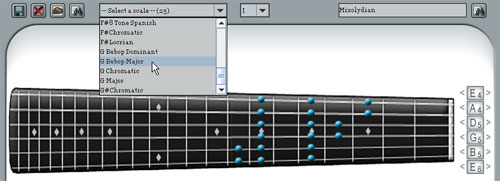

Links
About Guitar Scale Assistant
Getting Started
Using the Clickable Fretboard
Searching for Scales
Viewing Scales
Using the Tuners
Using the Audio Interface
Searching for Scales

Fig. 5 Searching for scales
You can search for scales by name or by notes. In both cases, the matching scales from the search will be populated in the list box shown above. If no matching scales were found, a note will be displayed saying that GSA couldn't find any matching scales.
To search by name, enter a full or partial scale name in the textbox to the upper right hand corner of the window and click the "Search" button next to the textbox.
To search by notes, click all the notes on the fretboard that are in your chords or progression that you want to search by. Once you have all the notes that you want to match, use the "Find Matching Scales" button (located to the left of the scale list box). Use the File -> Find Matching Scales menu options to allow "off notes" in the returned search results.
< Prev | Next >